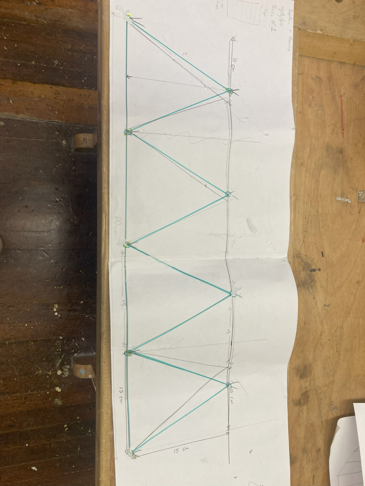

For our first design we decided on a bridge that is simple and easy to make while still providing useful information. We picked a Warren bridge design. We started by making a template and glued our spaghetti on top of the paper to make the design as accurate as possible. We decided to layer the spaghetti on the bridge four times to make sure it was sturdy.
Once we finished building our first bridge we tested it using a hydraulic press. The mass of the bridge was 150 g. Our bridge suffered from compression in the middle and held up only 4 pounds.
If we were to make this bridge again we would pay more attention to the length of the spaghetti. While building we didn’t notice that some were shorter than other branches on the bridge. The lack of attention to details caused our bridge to be crooked at the bottom making it lay uneven on the table. We would also change the amount of spaghetti we used. Throughout the whole bridge we used the same amount of spaghetti for each branch, even where it wouldn’t be needed. That caused us to have a heavier bridge, decreasing our final score. We learned that triangles are the best shape to use for bridges and for future designs we will be adding triangles to the 2nd and 3rd designs as they make quite a difference.